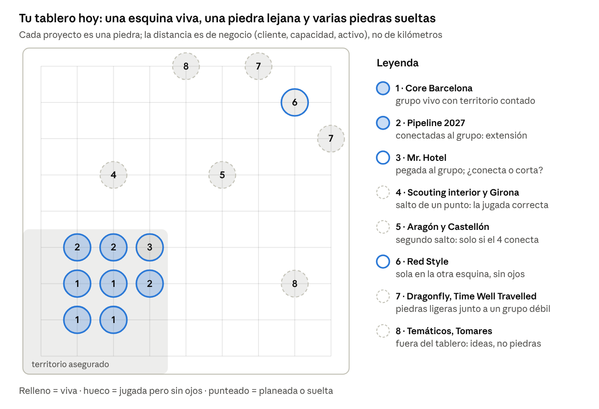
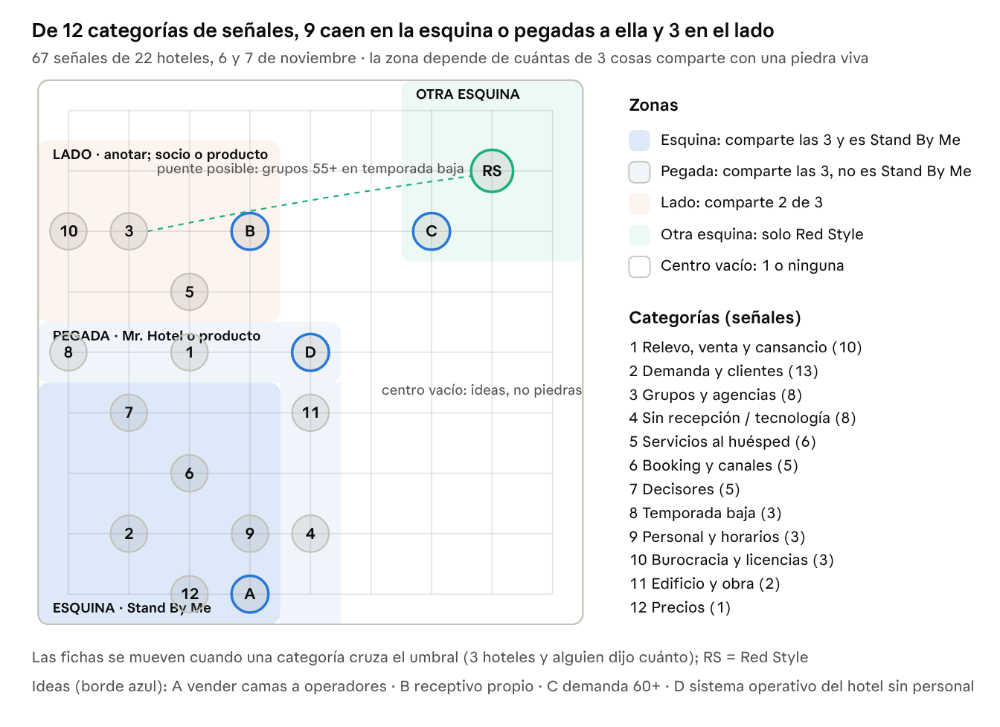

El tablero de Go: conquistar solo lo que tengo delante
Un fin de semana para dejar de pensar los proyectos como una lista y empezar a pensarlos como piedras en un tablero de Go: qué está vivo, qué está pegado a lo vivo, qué está lejos y qué es solo una idea. Y una regla para cada hora: solo se juega si toca algo que ya vive.
De ajedrez a Go
Un conferenciante dijo que había que pasar de la mentalidad del ajedrez (capturar, matar al rey) a la del Go (dominar el centro). Tenía razón a medias: en Go nadie empieza por el centro. El proverbio es «esquinas, luego lados, luego centro», porque una esquina se asegura con pocas piedras y el centro necesita muchas. Mi esquina es el operador de hoteles pequeños que ya funciona; el lado, los hoteles de la Cataluña interior que estoy visitando; el centro llega después, o no llega.
Tres ideas del Go que cambian cómo se cuentan las horas:
- Una piedra jugada no se mueve. Cada hora es una piedra: lo que haces se queda en el tablero, para bien o para mal.
- Un grupo vive con dos ojos. En un negocio: clientes que pagan y un activo que no depende de un tercero. Una piedra sola lejos de tus grupos tiene que hacerse los ojos sola; el grupo principal no puede ir a rescatarla sin debilitarse.
- Quien tiene dos grupos débiles pierde uno. Cada piedra nueva al lado de un grupo que aún no vive no lo refuerza: reparte la atención y debilita a los dos.
El tablero de proyectos

Relleno es vivo; hueco, jugado pero sin ojos; punteado, planeado o suelto. La esquina inferior izquierda da puntos; las piedras 4 y 5 son la única dirección de conquista que toca algo mío; la 6 tiene que hacerse sus ojos sola; las 7 y 8 hoy solo reparten atención.
El test de cada hora
Cuatro preguntas antes de jugar una hora en algo. Con dos o menos síes, esa hora no se juega hoy.
- Adyacencia. ¿Toca una piedra viva mía? Comparte cliente, capacidad o activo con algo que ya funciona.
- Exclusividad. ¿Solo yo puedo jugarla? Negociar con un propietario, cerrar con un inversor, decidir un deal. Si lo puede hacer otro o una automatización, no cuenta.
- Residuo. ¿Qué queda en el tablero cuando acabe la hora? Un contrato, una ficha, una relación, un dato. Si solo queda movimiento, es gote.
- Conexión. ¿Fortalece un grupo o abre uno nuevo? Abrir grupo nuevo solo si no hay ya uno débil.
Y las tres excusas que el test desmonta: «me gusta» es jugar donde el tablero es bonito, no donde hay puntos (legítimo si lo llamas hobby y le das un presupuesto de horas); «ya estoy en ello» es intentar salvar piedras muertas (si esa piedra no estuviera, ¿la jugaría hoy?); «es un hobby» está bien mientras no compita por las horas de iniciativa ni se le pida dinero.
El tablero de señales
En cada visita a un hotel oigo cosas: lo que falta, lo que no funciona, lo que el dueño querría dejar de hacer. Cada una es una señal, y una señal no es una piedra: es un sitio del tablero donde quizá convenga jugar una. El mismo tablero, con zonas en vez de piedras, dice dónde cae cada señal según cuántas de tres cosas comparte con algo vivo (cliente, capacidad, activo) y quién pagaría.

- Esquina: comparte las tres y es trabajo del operador tal cual. No es negocio nuevo.
- Pegada a la esquina: comparte las tres pero no es lo que el operador vende. Zona de originación, inversores o un producto a precio fijo.
- Lado: dos de tres. Se anota; se juega solo con socio o producto y cuando tres o más hoteles la han dicho.
- Otra esquina: solo comparte con la audiencia de medios.
- Centro vacío: una o ninguna. Idea, banco de ideas, cero horas.
Umbral para que una señal pase a piedra: la han dicho tres hoteles distintos, al menos uno ha dicho cuánto le cuesta hoy el problema, y existe una piedra viva a un paso. De dos días de ruta salieron 67 señales de 22 hoteles en 12 categorías; nueve de las doce caen en la esquina o pegadas a ella. Buena noticia (es el territorio correcto) y advertencia (casi nada de lo que oigo es negocio nuevo).
Cómo se mete una idea
Una idea nunca es una piedra: es un grupo de piedras que quieres tener dentro de dos años. Se coloca haciendo lo contrario de lo que hace la cabeza: en vez de imaginar el grupo entero, se descompone en las piedras sueltas que lo forman y se pregunta de cada una qué comparte con lo vivo, quién la paga y cuál tiene que estar puesta antes. Luego se juega la primera, no el grupo. En Go eso es una sonda: una piedra barata que dice si el territorio responde antes de comprometer las demás.
Las piedras A, B, C y D del tablero de señales son las dos primeras ideas colocadas así: el receptivo para el viajero de 60+ sobre la red de hoteles pequeños (A vender camas a operadores, B receptivo con producto propio, C demanda propia) y el hotel sin personal (D). Las dos dependen de la misma piedra: la red de hoteles que se construye visita a visita. Esa red es el centro del tablero en el sentido del Go: la piedra que da vida a todas las demás.
Lo que sale de mirarlo
- Tengo un núcleo, no tres: operar hoteles pequeños con poca gente y buenos números. Lo demás se mide por su distancia a esa frase.
- El núcleo tiene dos motores: conseguir contratos y operar con beneficio. El primero es silencioso y es donde está el cuello de botella; el segundo hace ruido cada día. El error sería dedicarse al que hace ruido.
- Una idea lejana no es un error en sí; lo es jugarla antes de que lo que tiene delante esté vivo.
El documento de trabajo completo (mapa del grupo, plan de 12 meses, crítica proyecto a proyecto y tablero de señales con las categorías colocadas) es privado; aquí queda el método y los dos tableros.